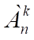
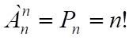
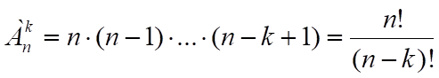
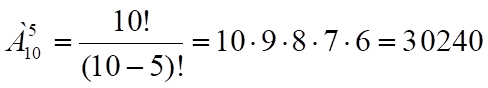
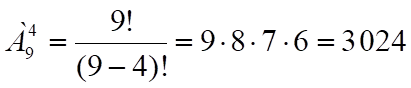
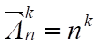
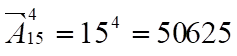
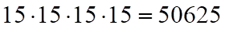
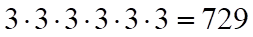

Определение: Размещениями
из n элементов по k элементов будем называть упорядоченные подмножества,
состоящие из k элементов, множества, состоящего из n элементов. Число
размещений из n элементов по k элементов обозначается (читается "А из n
по k").
Примеры задач, приводящих
к необходимости подсчета размещений
1) Сколькими способами
можно выбрать из 15 человек 5 кандидатов и назначить их на 5 различных
должностей?
2) Сколькими способами
можно из 20 книг отобрать 12 и расставить их в ряд на полке?
В задачах о размещениях
полагается k<n. В случае, если k=n, то легко получить

Число размещений из n
элементов по k элементов вычисляется по формуле
.
(5).
Доказательство: Для подсчета используем тот же метод,
что использовался для подсчета Pn ,только здесь возьмем лишь k предметов.
Первый предмет можно выбрать n способами (любой из n данных предметов), второй, при
выбранном первом, можно выбрать n-1 способам. Можно продолжать этот процесс до выбора
последнего k-го предмета. Этот предмет при выбранных первых k-1 предметов можно
выбрать n-(k-1) способами (или n-k+1). Таким образом все k предметов выбираются
числом способов, равным n(n-1)(n-2). . . (n-k+1).Что и требовалось доказать.
Примеры 5.1.
1. Студенты
второго курса изучают 10 различных дисциплин. Определить – сколькими способами
можно составить расписание на понедельник, если в понедельник планируется
поставить 5 пар?
Решение: Каждый вариант расписания представляет собой выборку 5 элементов из 10,
причем эти варианты отличаются друг от друга не только выбором этих дисциплин,
но и порядком их следования, т.е. является размещением из 10 элементов по 5. .
2. Сколько существует
различных вариантов выбора 4-х кандидатур из 9-ти специалистов для поездки в 4
различных страны?
Решение: .
Определение: Пусть даны n различных видов предметов, которые
можно разместить по k различным местам, причем выбирать предметы можно с повторениями (т.е.
можно выбрать несколько предметов одного вида). Такие выборки называются размещениями с повторениями, а их
количество вычисляется по формуле:
 (6)
.
Примеры
5.2.
1. Среди 15
студентов второго курса проводился конкурс на «Самого
умного», «Самого доброго», «Самого смелого» и «Самого умелого». Сколько
существует вариантов распределения призов, если по каждой номинации установлены
различные призы?
Решение: Каждый из вариантов распределения призов представляет собой комбинацию 4
участников из 15, отличающуюся от других комбинаций как составом номинантов,
так и их порядком, причем один и тот же участник может быть номинантом
несколько раз. Т.е. мы имеем дело с размещением с повторениями из 15 элементов
по 4. Их число находим по формуле (6)
.
Можно было рассуждать
иначе: победителем в первой номинации может быть любой из 15 студентов,
победителем во второй номинации может быть также любой из 15 студентов, ведь
один участник может быть номинантом несколько раз, победителями в третьей и
четвертой номинациях опять может быть любой из 15 студентов. Следовательно,
общее число вариантов распределения призов существует .
2. Сколько
6-значных чисел можно составить, используя цифры 3,4,5.
Решение: Все шестизначные числа, составленные из этих чисел отличаются друг от
друга либо самими цифрами, либо порядком их следования. Следовательно они
являются размещениями с повторениями из 3 элементов по шесть, т.е  .
.
Этот же результат можно
было получить, используя правило умножения: каждую цифру можно выбрать 3
способами. Всего получается .